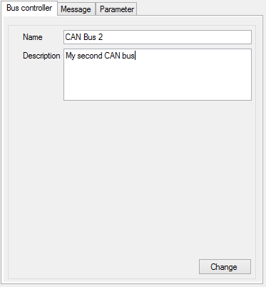

While working with multiple buses CAN configuration, a third tab 'Bus controller' appears in the edition form in addition of 'Message' and 'Parameter' tabs.
Click on a CAN bus node of the CAN configuration tree view to edit its properties.

In addition of standard CAN bus properties, in that tab, you can add few information about the current bus.
Then, click the 'Change' button to apply your changes.
Created with the Personal Edition of HelpNDoc: Free Kindle producer